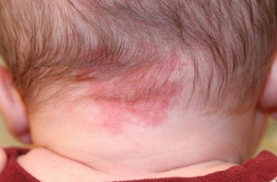

Почти у всех младенцев с рождения либо чуть позже появляются розовые, синеватые или красные пятна на коже. Это связано с подкожными сосудистыми сплетениями. У растущих детей кожа растет быстро и в ней содержится много развивающихся кровеносных сосудов. Области, где их особенно много, проступают на коже в виде родимых пятен. Чаще всего вы можете увидеть два вида их:
Укусы аиста. Это красноватые пятна, обычно располагающиеся на задней поверхности шеи, лбу или веках. Медики называют их невусами, но используют и шутливое «укусы аиста». Они представляют собой дополнительные кровеносные сосуды под тонкой кожей. По мере роста ребенка кожа становится толще и постепенно эти пятна исчезнут. Поскольку пятна на лбу становятся ярче, когда ребенок кричит, матери иногда именуют их «лобными фарами». Они обычно исчезают в возрасте от года до двух лет.

Ежевички. Это другой распространенный вид родимых пятен. На медицинском языке их называют гемангиомами, и они вызваны тем, что кровеносные сосуды под кожей растут, и растут до тех пор, пока не протолкнутся сквозь кожу. Некоторые становятся настолько большими, что напоминают ягоду ежевики. Обычно они появляются на первом году жизни, достигают максимального размера к году или двум, начинают уменьшаться в 3—5 лет и совсем исчезают к подростковому возрасту. Темпы роста и уменьшения у разных детей варьируют, но, если вы заметили, что центр «ежевички» стал серого цвета — это значит, что сосуды перестали расти и «ежевичка» начинает уменьшаться. Эти образования безопасны, они не склонны превращаться в злокачественные опухоли и редко нуждаются в каком-либо лечении. Только иногда бывает необходимо удаление с помощью лазера, если они расположены так, что мешают функции органа — например, на веке. Несмотря на то что большинство малышей даже не замечают этих «особых пятен», существует вредный обычай удалять их, что может привести к кровотечению или инфицированию раны.
Здоровье ребенка от докторов Сирс / Сирс У. и др.